Partitioning variation
\[ Y = \beta_0 + \beta_1 X_1 + \beta_2 X_2 + \beta_3 X_1 X_2 + \varepsilon \]
In linear regression we want to explain as much variation in \(Y\) as possible using the fewest terms possible (\(\beta\)).
\(\beta\) partitions variation to each potential fixed source of variation.
- Predictor variables \(X_1\) & \(X_2\)
- Interactions \(X_1 X_2\)
Residual error \(\varepsilon\)
Random or residual error = unexplained variation
May include any random effects (\(\gamma\)), not shown here.
All general linear models make assumptions about \(\varepsilon\). As \(\varepsilon\) is random, these assumptions also apply to \(Y\). Thus we can also check \(Y\).
4 assumptions
There are four general assumptions of linear regression:
- Normality
- Heterogeneity of variance
- Independence
- Fixed \(X\)
Also Linearity: Relationship between \(X\) and \(Y\) must be linear or be able to be appropriately described by a linear relationship.
“Traditional” ANCOVA
Analysis of Covariance is a special case of Analysis of Variance and linear regression but really it’s not different to a mixed model linear regression with categorical and continuous predictor variables.
There are two additional assumptions:
- Covariate values cover a similar range across groups
- Regression slopes are similar across groups
These assumptions are easily violated in most cases but does not mean that linear regression is not appropriate - just an example of how names don’t really matter; all linear regressions are fundamentally the same.
Checking assumptions
Always check your data meets the assumptions of linear regressions
Residual plots show relationships between residuals and model. To view the plots, call plot on a linear regression:
plot(lm(Y ~ X, data))There are 4 main residual plots assessing different modelling assumptions:
- Residuals vs fitted values
- Homogeneity of Variance
- Standardised residual quantile quantile plot
- Normality
- Standardised residuals vs fitted values
- Homogeneity of Variance
- Residuals vs Leverage
- Outliers
There are two other residual plots as we will see but they show influential observations in a different way.
Fitted values are the predictions from the parameterised model. Standardised residuals are residuals divided by their standard deviation to control for potential biases from unequal variance.
Residual plots
You can plot all four plots in one graph using par(mfrow = c(2,2)) and changing the margin sizes might help (mar). Here’s an example of the four residual plots:
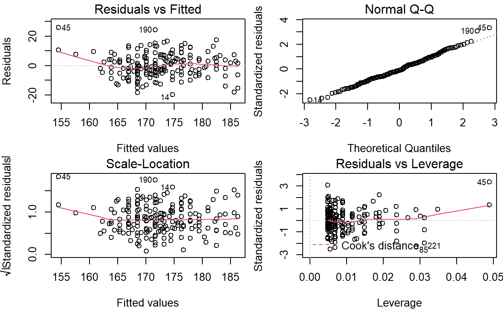
We will go through how to use these plots to assess the assumptions above.
1. Normality
Population Y values and error terms (\(\varepsilon\)) are normally distributed for each level of the predictor variable (\(X\))
Data should follow normal distribution - doesn’t apply to non-Gaussian general linear models.
Check for normality using:
- Histogram of \(Y\)
- Quantile-Quantile plot of \(Y\) and \(\varepsilon\)
Quantile-Quantile (Q-Q) plots are useful alternatives to visualising distributions to density plots or histograms. They are easier to assess distribution and normality with than histograms.
Q-Q plot of single variables
We can see whether a single variable has a normal distribution - specifically that the distribution is symmetrical or not skewed - using the function qqnorm(data$variable).
Here’s an example using the built-in datasetchickwts for the weight of chicks:
qqnorm(chickwts$weight) 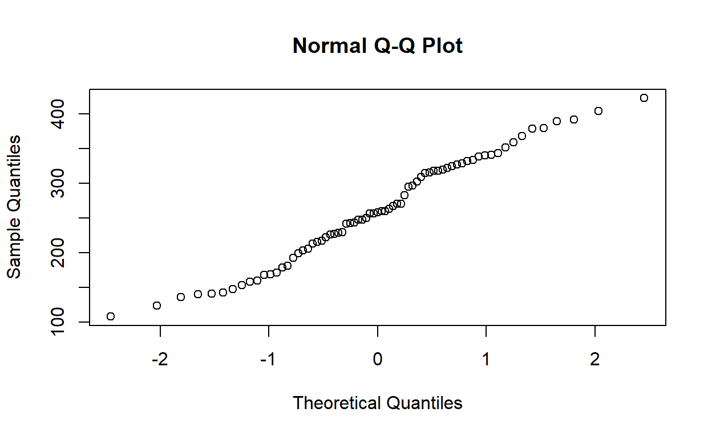
Here, the quantiles of our observations are plotted against the theoretical quantiles if our observations followed a normal distribution.
Question
We can add a reference line to the above to help us evaluate how our observations deviate from the expected normal relationship by calling qqline(data$variable). We can make the line red and thicker for fun.
The thickness of a line in an R plot is changed using
lwd(line width) & the colour of something in a graph is changed usingcol
Here is the code to plot our Q-Q plot and a reference line. Change the qqline function so that we can have a red line that is 2 units thick for fun.
qqnorm(chickwts$weight) ## the weight of chicks fed different diets (built in dataset)
qqline(chickwts$weight, col = "hotpink", lwd = 0.1)Which two parameters do we need to change to change colour and line thickness?qqnorm(chickwts$weight) ## the weight of chicks fed different diets (built in dataset)
qqline(chickwts$weight, col = "red", lwd = 2)Do you think the observations follow a normal distribution?
Compare the above with the histogram and density plots
par(mfrow = c(1,2)) ## plot two graphs side by side. horizontally (two columns, one row)
plot(density(chickwts$weight), col = "purple") ## density plot, purple for fun
hist(chickwts$weight, col = "yellow") ## histogram, yellow for fun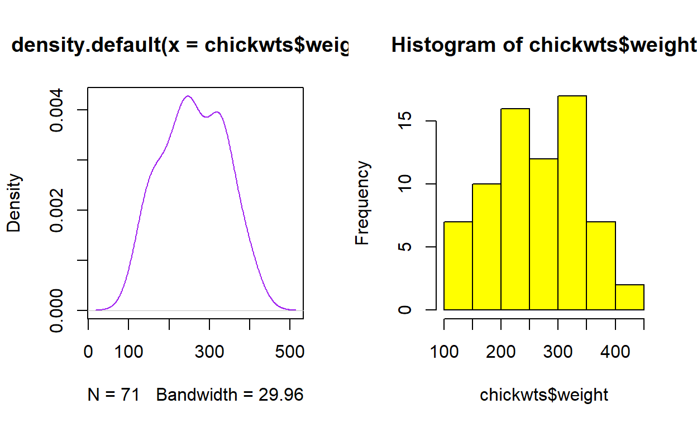
Question
For comparison look at the Q-Q plots of a gamma distribution below which is definitely not normal.
par(mfrow = c(1,2)) ## plot two graphs side by side. horizontally (two columns, one row)
plot(density(rgamma(100, 3, 5)))
qqnorm(rgamma(100, 3, 5))
qqline(rgamma(100, 3, 5)) ## You should be able to see the skewness in the data. Compare with hist()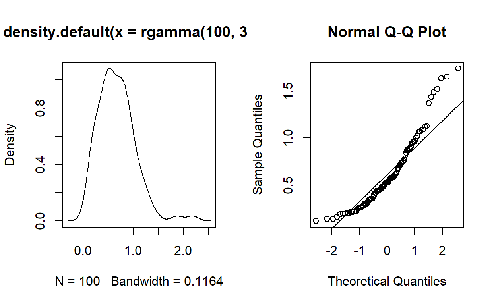
Question
What happens with data that is not continuous?
Q-Q plots also work with visualising data that is not continuous.
qqnorm(Loblolly$age) ## the ages of pine trees, can also try rbinom(100, 10, 0.5)
qqline(Loblolly$age)
Question
You can also see the difference using hist().
Test yourself
There is some debate around whether linear regressions following a normal distribution are suitable for discrete data like counts because these models are best used for continuous numeric variables. If it’s likely a issue, the more appropriate model is a linear regression following a Poisson distribution, which compares expected vs observed values like a contingency table. Using different probability distributions in linear regression is called Generalised Linear Modelling (GLM).
Q-Q plots of residuals for assessing normality
Q-Q plots permit comparison of two probability distributions when one distribution is the expected and the other is the observed distribution, then we can evaluate how well our observations follow our expected distribution. Using Q-Q plots we can assess skewness or identify outliers or influential points.
Q-Q plots are automatically generated when calling plot on a linear model (lm). It’s the second graph called (defined using which). You can also make one using qqplot()
Let’s look at an example using the built-in dataset trees:
plot(lm(Height ~ Girth, trees), which = 2)Does that look normal to you?
There are formal tests for normality but as linear regressions are somewhat robust to some deviation, usually eyeballing the data is fine. Data does not need to be perfectly normally distributed.
Another use of Q-Q plots
We can also compare the distribution of two variables. If they are distributed equally then they should fall along the straight line.
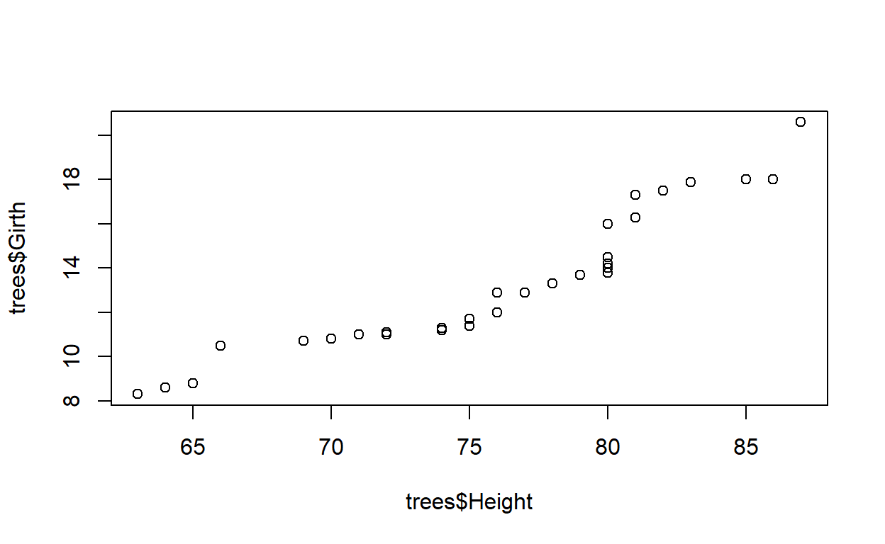
Compare with:
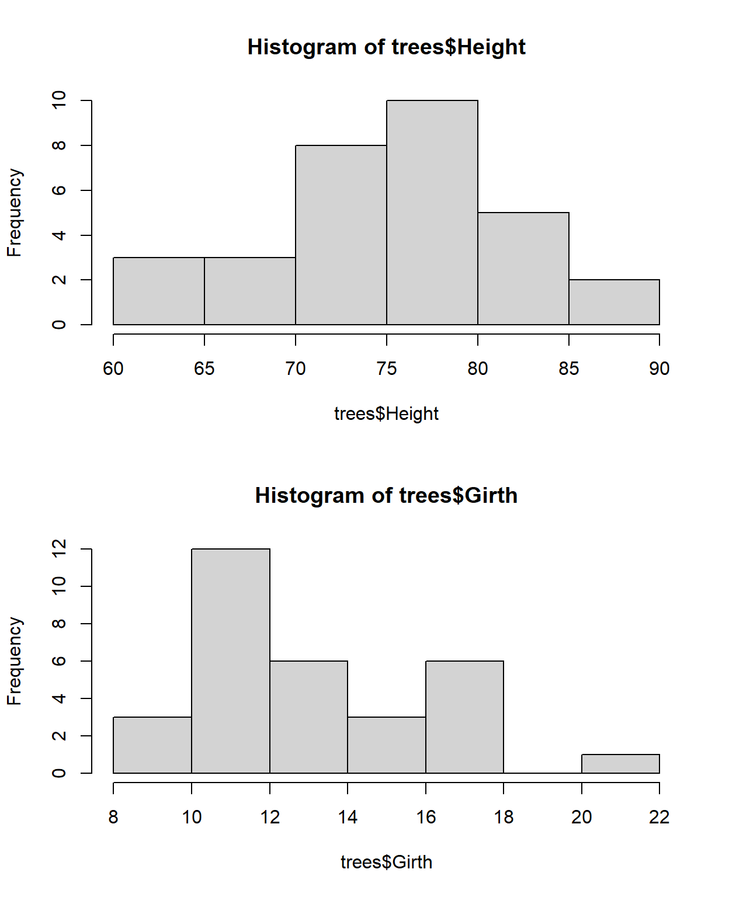
Dealing with non-normality
There are a few options for dealing with non-normal data
- If small sample sizes are a cause, collect more data and invoke the Central Limit Theorem
- Ignore it - these analyses are robust to some skewness
- Use alternative tests
- GLM
- Non-linear regression
- Non-parametric test
- Transformation
Transformations on \(Y\)
Transforming data aims to spread out \(Y\) more evenly so that it better follows a normal distribution. If \(Y\) follows a normal distribution, then so might the residuals.
Some common transformations:
- \(\log_{10}\) or natural log - for positive non-0 numbers
- Square root, cube root - for positive values including 0
- Inverse
When taking logs, 0 or negative values need to be dealt with. For example, by making all values positive.
The mammals dataset in the package MASS contains body sizes of a range of mammals but body size is very skewed to the right.
Q-Q plot of mammal body sizes
We can apply a transformation to make the distribution of body size approximate a normal distribution. Below is the function to plot the Q-Q plot of body size with a reference line. Modify the code to apply a log10 transformation to body size
qqnorm(mammals$body)
qqline(mammals$body)what is the function to log10 transform a variable?Have you applied the transformation to both lines of code?qqnorm(log10(mammals$body))
qqline(log10(mammals$body))Once you’ve made your transformation, then you can conduct your linear regression and assess the residual plots.
Here are the residual plots for the untransformed mammal dataset:
par(mfrow = c(2,2), mar = c(4, 4, 1.5, 0.5))
plot(lm(brain ~ body, mammals))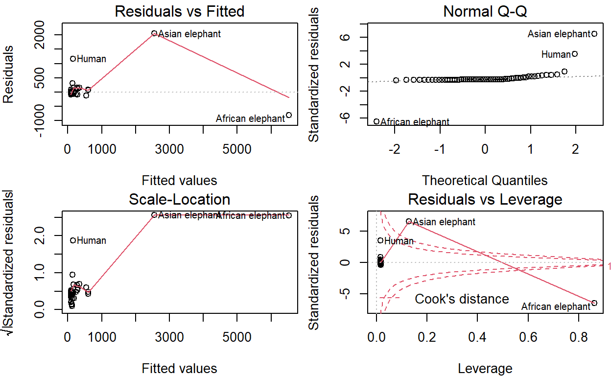
Now try modifying the code below to view the residual plots for the relationship between log10 transformed mammal brain size and body size. I’ve added a 2x2 grid plot structure for you that you can modify further if you wish:
par(mfrow = c(2,2))
lm(brain ~ body, mammals)How do your residual plots compare between the transformed and untransformed data?
2. Homogeneity of Variance
Population \(Y\) values and error terms (\(\varepsilon\)) have the same variance for each level of the predictor variable (\(X\))
Homoscedasticity is the statistical term for homogeneity of variance. The opposite is called Heteroscedasticity.
Check variances and residuals:
- Quantile plot
- Relationship with fitted values (predictions of \(Y\) from model)
Question
Bar plot of mean of two groups (A & B). Error bars indicate standard deviation
The same concept applies for scatter plots.
A scatter plot and a fitted model
Heteroscedasticity is common in time series data because your observations are not independent of each other; the value of one observation is dependent on what happens earlier in time. In other words, your response variable can be modelled based on the standard deviation.
Question
You can assess this assumption for a linear model from the (standardised or non-standardised) residual plot vs fitted values. Here are the relevant residual plots using the above data.
Can you see the unequal variance? The increasing variance in points with fitted values forms a cone or triangle pattern which is also sometimes called a shotgun pattern.
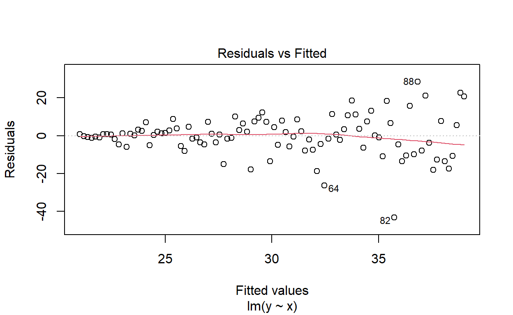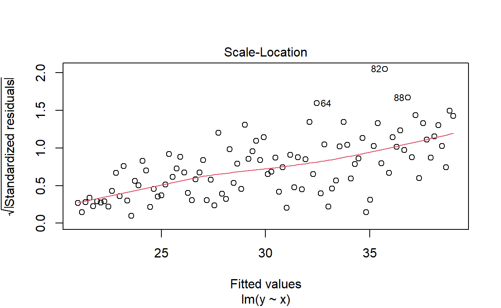
We also want to watch out for any humps or valleys in this relationship. In other words, the relationship (red line) between residuals and fitted values should be as straight and flat centering around 0 as possible.
One way of dealing with heteroscedasticity is to use weighted least squares regression where the parameters are fitted to a single observation based on its residual to correct for variation in the residuals (the scatter you can see above). For time series data, its best to use special types of linear regressions designed for time series.
mammals
Another way of dealing with heteroscedasticity is like with normality - transform the data. Here’s an example with the linear regression using the mammals dataset:
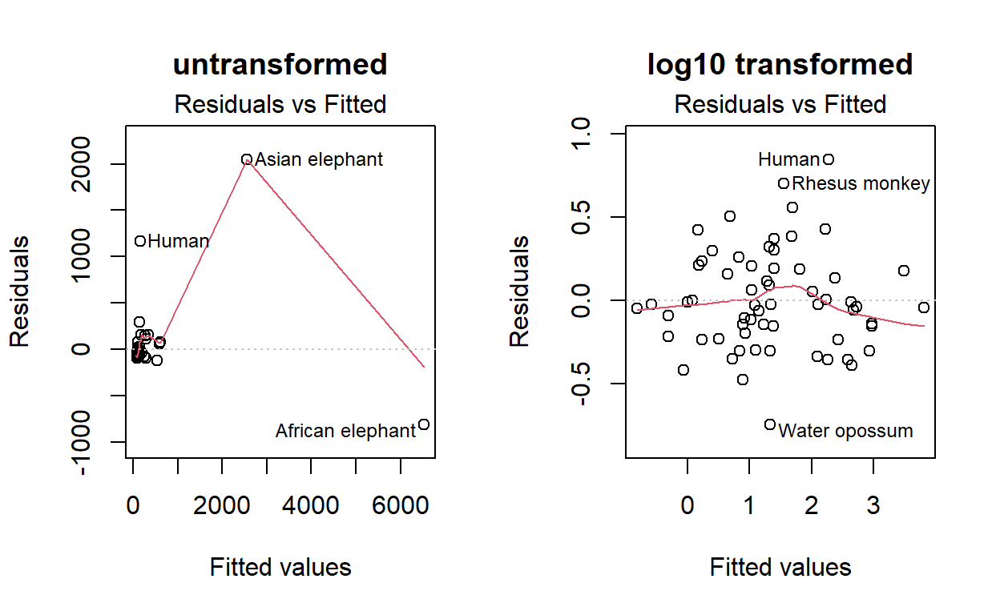
You can see that transforming the data made the relationship between the residuals and fitted values much more equal. Thus, the transformed values made for a more appropriate linear regression!
Here is the same conclusion with the standardised residuals:
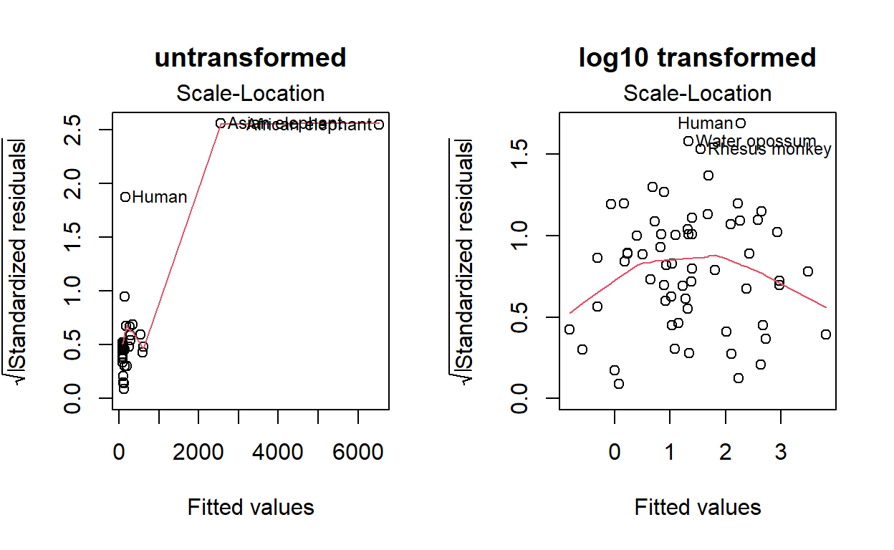
You can see from above that transforming the data does not guarantee that the relationship between the residuals and fitted values is perfect. There is still a hump in the relationship but it is still better than the untransformed data.
You can also look at the quantile quantile plot of standardised residuals to assess homogeneity of variance.
3. Independence
Population \(Y\) and error terms (\(\varepsilon\)) are independent
Causes:
- Autocorrelation
- Effect of experimental design
- Time series
- Pseudo-replication
- Repeated measures
This is an important assumption for GLM. You can assess it by checking residuals vs \(X\) values or row number.
Solutions:
- Random effects model or mixed effect models with nested variables
- Drop variables
- Careful experimental design
- Advanced analyses for repeated measures (e.g. paired t-test, repeated measures ANOVA)
Ask yourself what is your level of replication and are you properly testing at that level. Do you need sub-sampling to capture variation across hierarchical levels in your experimental design? Is your experimental design nested within blocks or fully crossed or random? Poorly planned experiments can easily cause non-independence. For example, using a common water source across multiple aquaria makes those aquaria non-independent of each other - they share water.
4. Fixed \(X\)
The predictor variable is fixed - a known constant, can explain all variation
Whether or not the predictor variables are fixed or random will change how the F ratio is calculated in ANOVA. There are different types of ANOVAs:
- Type I model - fixed effects, often broken in biostats
- Type II model - random effects
- Type III model - mixed effects
If using these other types of models, it’s important to check that the right F ratio is used and that R has classified the predictors properly. Check the degrees of freedom are correct.
You can use more advanced estimation functions, e.g.lmer, nlme and (restricted) maximum likelihood for mixed effect modelling.
Outliers
Outliers can be assessed before fitting a model. For example, using boxplots and the 1.5 \(\times\) IQR rule.
But outliers need to be evaluated with respect to biological context. Outliers are not inherently bad, they might have some biological meaning. Or they may be typos in the data entry process.
The fourth residual plot will show the effect of observations on the model fitting process. There are two ways that this effect is measured:
- Leverage = how much \(X\) influences \(Y\)
- Influence = how much \(X\) influences slope of line (Cook’s Distance)
Other residual plots
Two other residual plots can be called within plot using which, e.g. plot(lm(Y~X, data), which = 6). These show the effects of observations in different ways but are not usually more informative than the main residual plot:
- Plot 4: Cook’s Distance vs observation number
- Plot 6: Cook’s Distance vs Leverage
Mammal outliers
Here is the residual plot for the mammals dataset. Named points are observations that have greater influence on the slope than others.
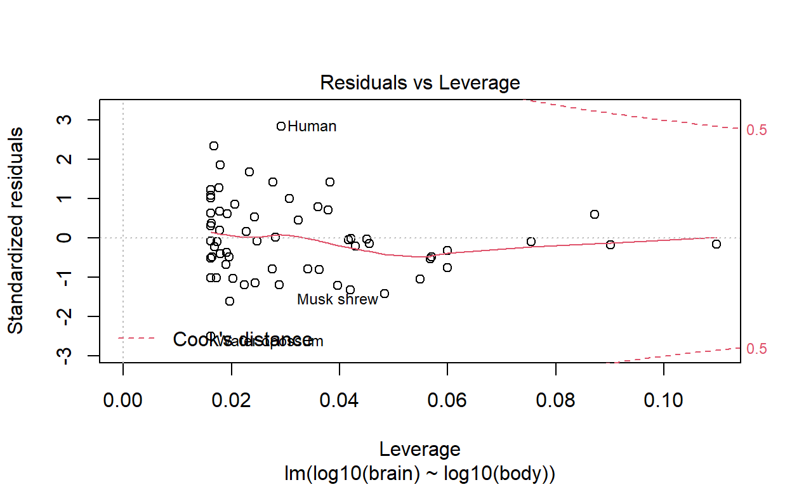
We can see that humans are an outlier. That’s a known effect - humans have disproportionally large brains for our body size relative to other mammals!
This is an example of outliers having biological meaning. We can also see that in the plot of Cook’s distance vs observation number:
plot(mammal_brains, which=c(4))Humans are an outlier.
Summary
Check assumptions. Make sure stats is appropriate
- Plan stats from the start
- Formal tests of assumptions
- Bootstrapping
- Bayesian approaches
- Weighted regression